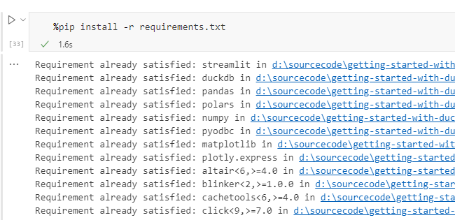
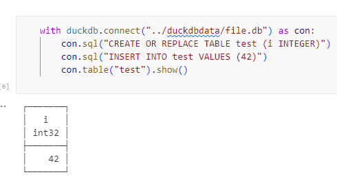
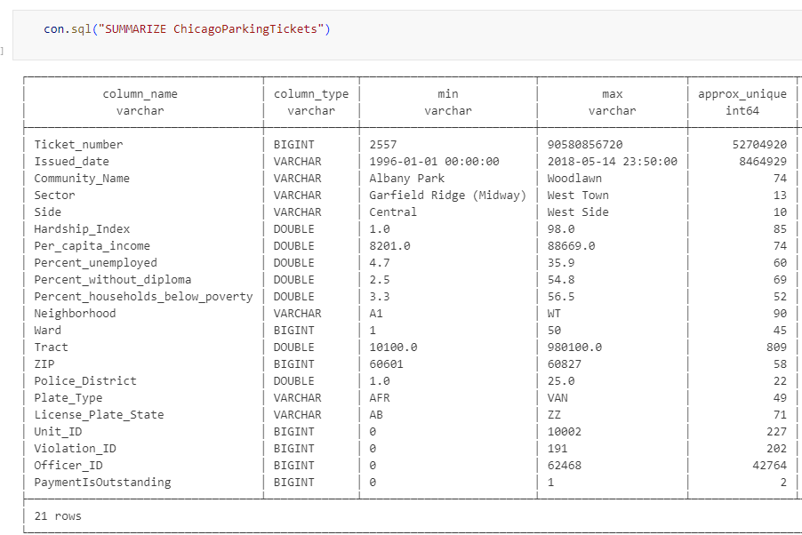
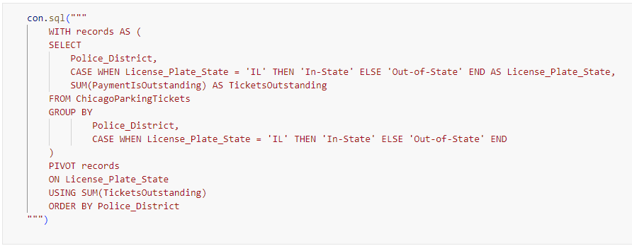
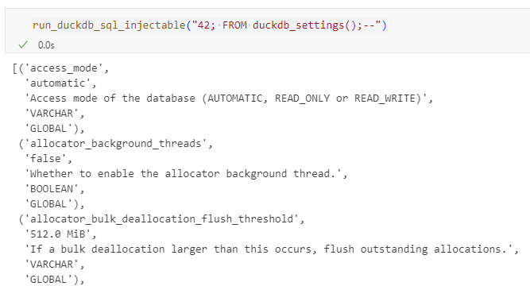
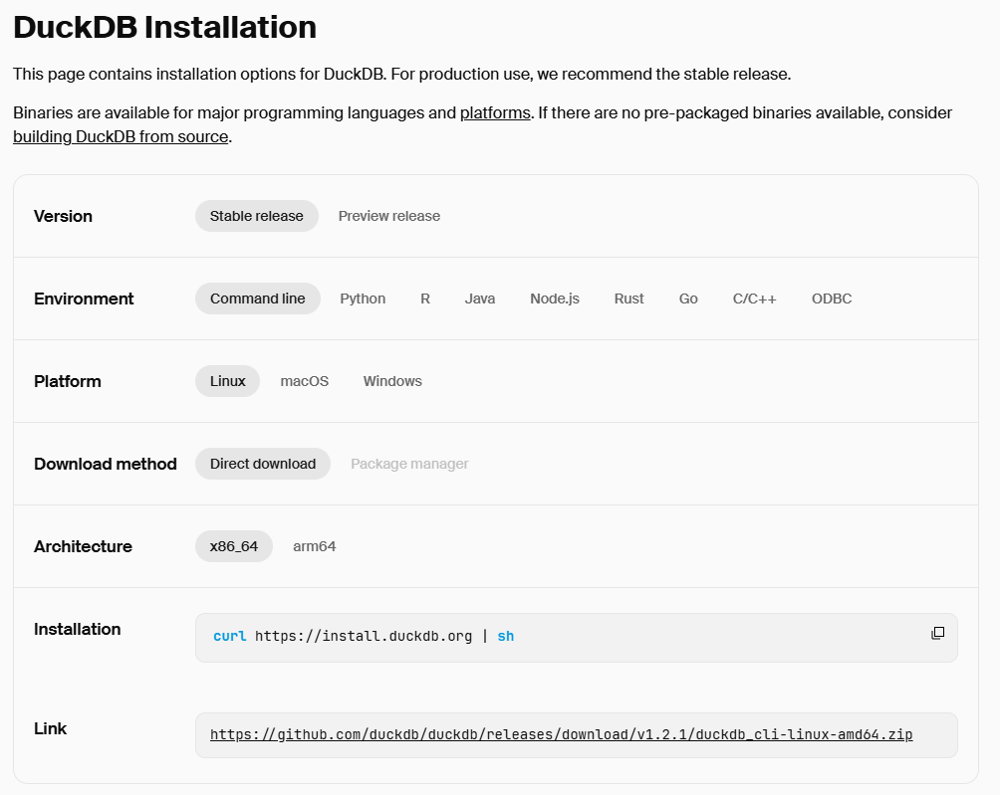

Getting Started with DuckDB
Kevin Feasel (@feaselkl)https://csmore.info/on/duckdb
Who Am I? What Am I Doing Here?


Motivation
My goals in this talk:
- Introduce you to DuckDB
- Explain how DuckDB differs from other databases
- Work with datasets in DuckDB
- Discuss administration, performance tuning, and product limitations
What We'll Do
What We'll Do
What We'll Do
What We'll Do
What We'll Do
Agenda
- An Overview of DuckDB
- Installation
- Working with DuckDB
- Administration
- Limitations and Recommendations
What Is DuckDB?
DuckDB is a single-user, open-source database for analytical data processing.
DuckDB is to data analytics what SQLite is for mobile applications.
Benefits of DuckDB
- Very low resource overhead
- No dependency on network resources
- Works with a variety of data formats, including Parquet, CSV, and JSON
- Extensions allow DuckDB to read data from S3 or Azure Blob + Data Lake Storage
- Very fast for analytical operations due to columnar data storage
- Supports a variety of interfaces, including CLI, Python, R, .NET, Go, Node.js, etc.
Primary Use Cases
- Interactive data analysis (data science)
- Pipeline component for automated data processing (data engineer)
- Database in a browser (WebAssembly) or smartphone
Level-Setting Expectations
DuckDB is NOT a replacement for enterprise database systems! It is not well-suited for heavy transactional processing, does not allow multiple connections, has no concept of role-based access control or logins, and must run in your local environment or container.
Agenda
- An Overview of DuckDB
- Installation
- Working with DuckDB
- Administration
- Limitations and Recommendations
Making a Choice
A variety of installers for DuckDB exist. Because DuckDB is an in-process database, it does not have a standalone installer that configures some active service. Instead, you install it as a library in your programming language of choice. Examples include:
- CLI
- Python
- R
- Node.js
- Go
- Java
- .NET (via DuckDB.NET)
Installation
Post-Install Configuration(?)
For most libraries, there is no post-install configuration needed.
There are no logins or databases to create, and any configuration settings you might want to change are things you can do in your code.
Agenda
- An Overview of DuckDB
- Installation
- Working with DuckDB
- Administration
- Limitations and Recommendations
Working with DuckDB
Each DuckDB client API has its own idiosyncrasies, but they are mostly very similar overall.
For that reason, we will focus on the Python client in all demos, though most of what we cover will be the same for any other client.
Demo Time
Agenda
- An Overview of DuckDB
- Installation
- Working with DuckDB
- Administration
- Limitations and Recommendations
SET Statements
DuckDB does include a variety of SET statements allowing you to change the service configuration. RESET commands return settings to their defaults. You can configure settings in two scopes: GLOBAL (affecting the entire DuckDB instance) or SESSION (affecting the current session connected to a DuckDB instance).
Available Settings
DuckDB, as of April 2025, has over 100 separate settings available and documented on their website. You can see your current settings using the following command:
PRAGMA Commands
PRAGMA commands are similar to those offered in SQLite and serve as the equivalent of certain system tables or DMVs in SQL Server.
Managing Secrets
The type of secrets you can store will depend upon which extensions you have installed. The set of secrets available as of April 2025 include:
- Azure Blob Storage (azure)
- Google Cloud Storage (gcs)
- HTTP and HTTPS (http)
- Hugging Face (huggingface)
- MySQL (mysql)
- PostgreSQL (postgres)
- Cloudflare R2 (r2)
- Amazon S3 (s3)
Creating Secrets
Use the CREATE SECRET command to create a secret. The exact syntax will depend upon the extension. Examples of using the Azure extension include:
Persistence
By default, secrets do not persist between sessions. To manage a persistent secret, use the PERSISTENT keyword.
This will save secrets in ~/.duckdb/stored_secrets by default but you can change that with the SET secret_directory = '...' command.
DuckDB stores secrets in an unencrypted binary format on disk (with the same 600 permissions as an SSH key).
Dropping Secrets
If you have any persistent secrets, you can drop them using the DROP PERSISTENT SECRET command.
Agenda
- An Overview of DuckDB
- Installation
- Working with DuckDB
- Administration
- Limitations and Recommendations
Security Tips
DuckDB does not support logins, passwords, multiple users, or other common ways of preventing access to data. Instead, here are some tips for keeping your data safe.
Security Tips
If using the CLI, consider running in safe mode: duckdb -safe [my_file_name]. This prevents DuckDB from accessing any external files other than your database file
Security Tips
Restrict access to specific file systems or all external files using the commands SET disabled_filesystems = '...' or SET enable_external_access = false;
Security Tips
Restrict access to specific directories using SET allowed_directories = [ '/tmp', '/opt/my_data' ] along with SET enable_external_access = false;
Security Tips
Constrain resource usage to prevent out of memory attacks or CPU throttling attacks.
Use SET memory_limit = '1GB' to limit the amount of memory available to DuckDB.
Use SET max_threads = 1 to limit the number of threads available to DuckDB.
Use SET max_temp_directory_size = '1GB' to limit the size of temp files.
Security Tips
Be careful in which extensions you install! There are core and community extensions. Only the DuckDB team are allowed to create core extensions.
You can limit access to just core extensions by running SET allow_community_extensions = false.
If you run this command, you cannot turn community extensions back on without restarting DuckDB.
SQL Injection
Use prepared statements to prevent SQL injection.
Persistence is optional
You can treat DuckDB entirely as an in-memory database, as a permanent store of relevant analytical data, or a hodgepodge of both.
Because DuckDB can natively read various file formats, including (with extensions) data in Blob Storage or S3, you never need to migrate or ETL data.
But if you do want to pack up your work for the night, you can save results to disk, either as a DuckDB database file or writing back to Pandas/Polars and saving that way.
Constraints Are Weird
DuckDB does support the standard set of relational database constraints (primary key, foreign key, unique, check, default).
However, you may run into an issue with updating indexed foreign key constraints. An update may be rewritten as a delete followed by an insert, and that attempted delete will fail if the foreign key constraint is violated.
Wrapping Up
Over the course of this talk, we have covered a basic introduction to DuckDB, including some of the available client APIs, the SQL syntax, how to manage databases, product limitations, and recommendations on how to manage your DuckDB installations.
Wrapping Up
To learn more, go here:
https://csmore.info/on/duckdb
And for help, contact me:
feasel@catallaxyservices.com | @feaselkl
Catallaxy Services consulting:
https://CSmore.info/contact